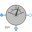
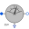
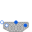

IMC_InitializeSteady-state initialization of induction machine with squirrel cage |
|
Diagram
{kind=link}
Information
This information is part of the Modelica Standard Library maintained by the Modelica Association.
Test example: Steady-State Initialization of Asynchronous induction machine with squirrel cageThe asynchronous induction machine with squirrel cage is initialized in steady-state at no-load; at time tStart a load torque step is applied.
Simulate for 1.5 seconds and plot (versus time):
- currentQuasiRMSSensor.I: stator current RMS
- aimc.wMechanical: motor's speed
- aimc.tauElectrical: motor's torque
Parameters (8)
| VNominal |
Value: 100 Type: Voltage (V) Description: Nominal RMS voltage per phase |
|---|---|
| fNominal |
Value: imc.fsNominal Type: Frequency (Hz) Description: Nominal frequency |
| wSync |
Value: 2 * pi * fNominal / imcData.p Type: AngularVelocity (rad/s) |
| tStart |
Value: 0.5 Type: Time (s) Description: Start time |
| TLoad |
Value: 161.4 Type: Torque (N·m) Description: Nominal load torque |
| wLoad |
Value: 1440.45 * 2 * Modelica.Constants.pi / 60 Type: AngularVelocity (rad/s) Description: Nominal load speed |
| JLoad |
Value: 0.29 Type: Inertia (kg·m²) Description: Load's moment of inertia |
| imcData |
Value: Type: AIM_SquirrelCageData |
Components (19)
| imcQS |
Type: IM_SquirrelCage |
|
|---|---|---|
|  | currentQuasiRMSSensorQS |
Type: CurrentQuasiRMSSensor |
| sineVoltageQS |
Type: VoltageSource |
|
| starQS |
Type: Star |
|
| groundQS |
Type: Ground |
|
| loadInertiaQS |
Type: Inertia |
|
| torqueStepQS |
Type: TorqueStep |
|
| terminalBoxQS |
Type: MultiTerminalBox |
|
| imcData |
Type: AIM_SquirrelCageData |
|
| imc |
Type: AIM_SquirrelCage |
|
|  | currentQuasiRMSSensor |
Type: CurrentQuasiRMSSensor |
| sineVoltage |
Type: SineVoltage |
|
| star |
Type: Star |
|
| ground |
Type: Ground |
|
| loadInertia |
Type: Inertia |
|
| torqueStep |
Type: TorqueStep |
|
|  | terminalBox |
Type: MultiTerminalBox |
| starMachineQS |
Type: Star |
|
| starMachine |
Type: Star |